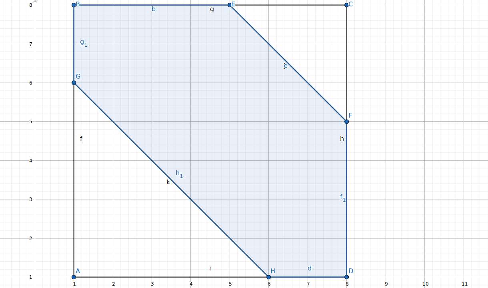

问题描述
有n个人排成一排。给定一个数a()
第i个人可以向区间(i-a,i+n-a)中的任意一个人连一条有向边（确实包括自己）
问每个人的入度出度恰好为一的方案数。
题解
可以考虑容斥。
把决策画成一张表，其中选中第i行第j列的数代表j向i连一条有向边。
现在要选出n个行和列上都不相同的点，如果都在阴影部分内（含边界）的话就是一个合法方案。
下图是n=8,a=3的情况：

我们先只考虑上半部分（1到a行，即第n个人不在阴影内的行）
令f[i][j]表示考虑了这其中的i行，有j行不合法的情况数，表示上a行有j行不合法时下半部分的合法方案数。
那么答案为：
f[i][j]可以从第a行开始向上转移，这样只需要知道后面填了多少个不合法的数可以写出转移系数。
为了方便,f可以先只算不合法部分的情况数，最后再乘上合法部分的方案数（阶乘完事）
g[j]同理从下往上转移，但由于限制了必须要合法所以从下往上每一行的方案数恰好相等。
可以写出表达式：
代码为了方便直接把容斥系数写进f[i]的推导过程里了。
code:
#include <iostream>
#include <cstdio>
#include <cstring>
#include <cassert>
typedef long long lint;
const int N=1e5+5;
const int mod=998244353;
int n,q,fac[205],dp[205];
namespace utils{
#define eprintf(...) fprintf(stderr,__VA_ARGS__)
template <class T> inline void apn(T &x,const T y){x=x<y?x:y;}
template <class T> inline void apx(T &x,const T y){x=x>y?x:y;}
inline int nxi(){
int x=0;
char c;
while(((c=getchar())>'9'||c<'0')&&c!='-');
const bool f=c=='-'&&(c=getchar());
while(x=x*10-48+c,(c=getchar())>='0'&&c<='9');
return f?-x:x;
}
}
using namespace utils;
//第i行选j: j向i卖弱
//f[i][j]: 第q行开始往上i行 j个不满足条件的方案数
inline int fpow(int x,int t){
int ans=1;
for(; t; x=(lint)x*x%mod,t>>=1){
if(t&1) ans=(lint)ans*x%mod;
}
return ans;
}
int main(){
fac[0]=1;
for(int i=1; i<205; ++i){
fac[i]=(lint)fac[i-1]*i%mod;
}
for(int T=nxi(); T; --T){
n=nxi(),q=nxi();
memset(dp,0,sizeof(dp));
for(int i=0; i<=q; ++i){
for(int j=i; j; --j){//在此容斥
dp[j]=(dp[j]-(lint)dp[j-1]*(i-j+1))%mod;
}
dp[0]=1;
}
int ans=0;
for(int i=0; i<=q; ++i){
ans=(ans+(lint)dp[i]*fac[q-i]%mod*fpow(q-i,n-q))%mod;
}
printf("%d\n",(ans+mod)%mod);
}
return 0;
}